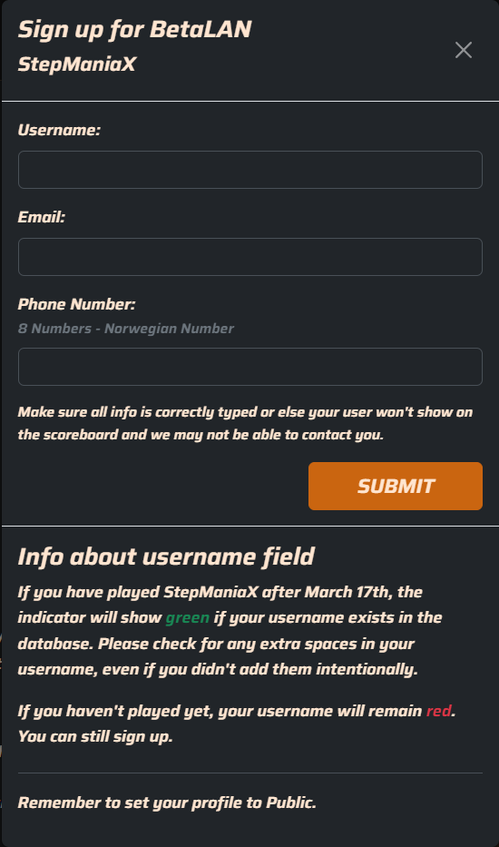
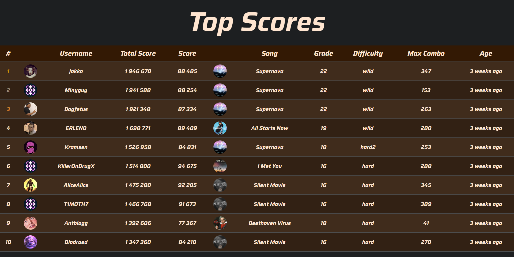

Prosjektet ARCSYS er et omfattende system designet for å håndtere turneringer i forskjellige arkadespill.
Hovedmålet var å lage et brukervennlig grensesnitt som tillater spillere å registrere seg, delta i turneringer,
og se live oppdateringer av sine prestasjoner fra flere spill. Systemet ble utviklet ved hjelp av moderne webteknologier som Vue.js
for frontend, .NET for backend, og MongoDB som database. Prosjektet var utfordrende og krevde tett samarbeid
med medstudenter og veiledere for å sikre at systemet oppfylte alle krav til funksjonalitet og sikkerhet.
Systemarkitekturen for ARCSYS bruker Vue.js for frontend, .NET for backend, og MongoDB for databasen.

For å delta i StepManiaX turneringen, måtte deltakerne registrere seg gjennom et enkelt og intuitivt skjema på nettsiden.
Registreringsskjemaet krevde kun grunnleggende informasjon som brukernavn, e-postadresse, og telefonnummer, noe som gjorde
det raskt og enkelt for spillere å bli med. Validasjon av dataene ble håndtert på klientsiden for å sikre at alle felt var
korrekt utfylt før innsending. Dette skjemaet var en viktig del av systemet, da det sørget for at deltakerinformasjon ble
korrekt lagret og kunne brukes til å opprette turneringsoppsett og generere resultattavler.
Turneringsoversikten ga deltakerne en klar oversikt over turneringen, inkludert starttidspunkt, spill, regler, og premier. Denne oversikten ble opprettet via en admin-side for turneringsopprettelse, som ikke vises her.

Top Scores-seksjonen var en essensiell del av ARCSYS, hvor spillere kunne se de høyeste poengsummene oppnådd i turneringene.
Dette oppdateres i sanntid, noe som skapte en konkurransedyktig atmosfære blant deltakerne. Resultattavlen inkluderte
detaljer som spillerens brukernavn, totalpoeng, oppnådd poeng i hver runde, og hvilken sang eller spill som ble spilt.
Dette ga ikke bare innsikt i hvem som ledet turneringen, men også i hvilke spill eller sanger som var mest populære blant deltakerne.
StepManiaX turneringen gikk veldig bra der vi hadde få feil i koden under Lanet. Vi trakk vinner under mesterskapet og ga premier til de som vant. Vi fikk mange gode tilbakemeldinger fra deltakerne fra de som var med på turneringen.

.png)